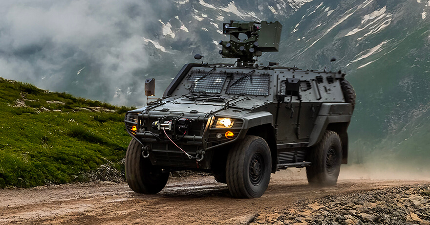
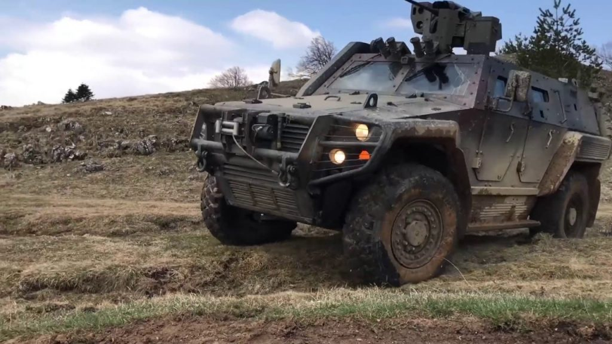

Genel Bilgi
COBRA II, Otokar tarafından geliştirilen 4x4 taktik tekerlekli zırhlı araçtır. Araç; yüksek balistik ve mayın koruması, artırılmış taşıma kapasitesi ve daha geniş iç hacmi ile önceki COBRA platformunun geliştirilmiş nesli olarak öne çıkar.
Otokar’ın resmî tanıtımında COBRA II’nin çok farklı görevlerde kullanılabilecek modüler bir platform olduğu belirtilir. Zırhlı personel taşıyıcı, komuta kontrol aracı, iç güvenlik aracı, tanksavar füze aracı, jammer platformu, havan tespit radarı aracı, ambulans / tıbbi tahliye aracı ve kurtarıcı araç gibi çok sayıda varyant bulunur.
Platform; zorlu arazi ve iklim koşullarında yüksek hareket kabiliyeti sağlamak üzere tam bağımsız süspansiyon, güçlü dizel motor, run-flat lastikler ve merkezi lastik şişirme sistemi ile donatılmıştır.


